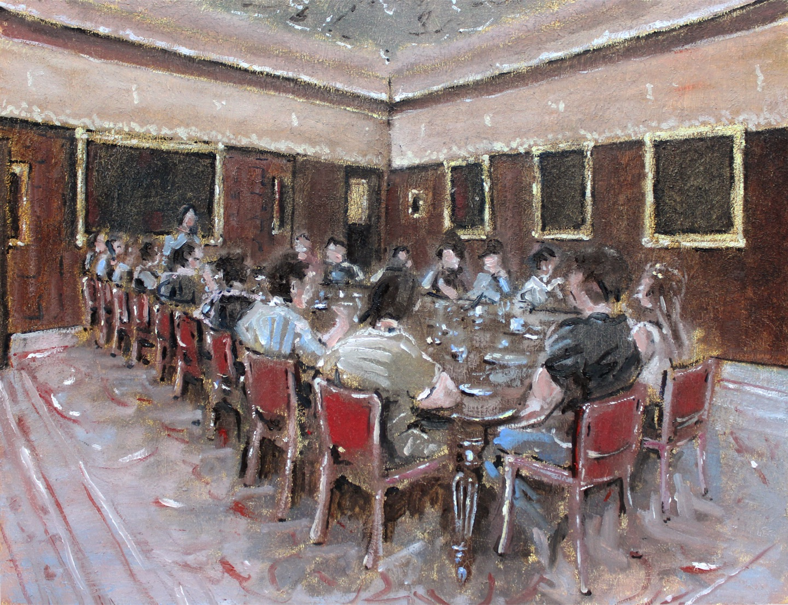
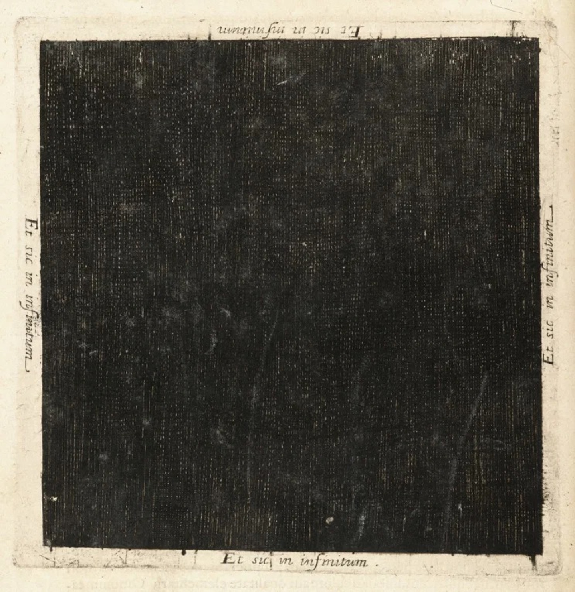

§ Archive

In 1755, the Great Lisbon earthquake reduced this gold adorned city to rubble. Wondering at this act of seemingly divine destruction the seismic ripples were not just material but philosophical and political. Most importantly they inspired the great philosopher, Immanuel Kant's idea of the sublime. A feeling of being dwarfed by immense power, a power that is awe inspiring, that is satisfying to see unfold, but one that inspires a deep feeling of dread in the pit of one's stomach.
To quote Kant himself the sublime is "awe-inspiring greatness in extent or degrees which invites approach" which invites a competitive urge "(in order to measure our powers against it)"
The notion bifurcates into the mathematical sublime; that which overwhelms us with its infinity a starry universe, seemingly impossible to understand in its totality; or the dynamical sublime- might itself, the avalanche, the tsunami, the earthquake. Kant argues that in going toe to toe with the universe; our efforts to grasp or emulate the sublime object "awakens in us a feeling of our own greatness and power". People find inspiration in the sublime.
But in the contemporary moment, where is the sublime? Where can we find it?
Arguably in the physical world- the cosmos, biology, scientific fact itself. But also in the social world- ideas of progress, free will, history, intelligence.
What is most interesting, however, is that you can see this sublime object, the notion of it, or the subconscious psychological reaction to it throughout the tech field.
One reaction is that nature itself, its might, its infinity is something to be contended with, to be found and dominated. One that is best summarised by Andreessen's techno optimist manifesto. He writes:
"We believe that we are, have been, and will always be the masters of technology, not mastered by technology. We are not victims, we are conquerors. We believe in nature, but we also believe in overcoming nature. We are not primitives, cowering in fear of the lightning bold. We are the apex predator; the lightning works for us."
But perhaps more interestingly, the sublime and technology clearly intertwine in a more experiential sense. Technology itself broadens the horizon of human experience. Technology provides a new mode of accessing new sublime feelings- the stars, the moon, the pale blue dot. Here I turn to Bezos' spaceflight. Amid Katy Perry, the champagne was one man Shatner. Returning to earth it was clear that he had experienced the sublime, he spoke of the earth to CNN saying his experience "has to do with the enormity and the quickness and the suddenness of life and death" and he told CNN he couldn't spot crying because he "was grieving for the destruction of the Earth".
While Kant marvelled at the magnitude of the Earth, Shatner's experience was inverted by technology. Instead of seeing the dynamical power of an earthquake over man, he saw the pale blue dot in the vastness of space.
But most importantly and what is most pressing is one final interaction of the sublime and technology. We can now create the sublime. These moments of creation come from a complex hybrid, a cyborg assemblage of human emotions, fear, geopolitical competition, technical brilliance, scientific discovery. Here is Oppenheimer's turn to Vedic, when he saw the mushroom cloud billowing on the horizon he uttered the famous phrase "I am become death, the destroyer of worlds". He saw, he created, he feared the sublime.
So, to circle back, the sublime is an awe-inspiring greatness which is unbelievably satisfying to see, but at the same time it fills you with dread. It's almost the philosophically pretentious version of spiderman's "with great power comes great responsibility".
What a time to think about inspiration! What a time to think about technology, the sublime, nature, the infinite, might itself. To reflect on fear, inspiration, greatness.
We have been given the ultimate Promethean promise, Artificial Intelligence, AGI, ASI, whatever you want to call it. This is promised to us in increasingly eschatological, end of days, words.
I have many questions.
Will we create one final sublime entity, god in a data centre, and exist under these 'machines of loving grace' as Dario says. What will that look like? What will that feel like? In outsourcing all of our reasoning and rationality will everything be sublime, will we be highly irrational, emotional, spiritual beings? Will life feel like an early memory?
Or will we take Demis' interpretation- we are creating a tool. Will this tool enable us to experience more of the sublime, the stars, to live infinite lives?
With nature itself brought to heel, where will the sublime go? You remember its capacity to inspire. What will our grandchildren's children fear, fight, or be inspired by?
I ask these questions because Threshold has a fundamental polymathic bet. The natural philosopher builder. Those who can hold together in one hand, the existential, the technical, the moral, and the brutal pace of being a tech CEO. We are fundamentally dissatisfied with SF's capacity to produce these people. We see the opportunity of the UK- in its heritage of polymaths- from Newton to Lovelace to Hassabis- to be the centre of this new wave.
As you can probably tell, Threshold has quite an existential spine running through it. Why not?
Many of you in this room have encountered the notion that this is the most important century in human history. Do you ever ask yourself why you are here? What conditions brought you here? Pure luck, yes, free will, maybe. But does this notion of luck, coincidence, circulate in your brain and fill you with a sense of something bigger. We are the generation of humans who are going to face the greatest crises, we are the generation of humans who will sit right on that knife edge, we are the generation of humans that will either be custodians of humanity's end, or of our claim on infinity.
You are all scientists, builders, operators in or around this tech space. We know that the tech startup is the fastest and most scalar way to influence the world. You are building those right now. In this century. Are you ready for that responsibility?... Are you creating something that will stand the test of time?... Are you creating something that should?... Is your intrinsic purpose deeply aligned with what you are building?... I will leave you with those questions. But I would like to, in honour of this being the first step for us at Threshold, to raise a toast. If you would all join me in repeating-
"To building something that deserves to be built"
Tap to view
